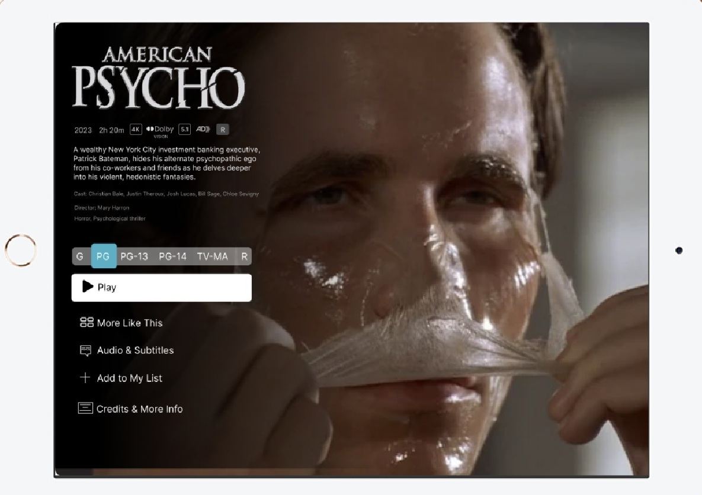

Featured Projects
Here are some of the UX projects Ive worked on, showcasing my skills in user research, prototyping, and design.
Clearstrm
A streaming platform that empowers users to adjust content ratings and seamlessly skip innapropriate scenes, making sure of a much more personalized and comfortable viewing experience.
- Role: UX Designer
- Tools: Figma, Adobe XD
- Skills: User Research, Wireframing, Prototyping
2. Teachable site for Cinci Dojo

Building the Teachable site for Cinci Dojo was a great learning experience. I focused on a clean, user-friendly design and clear course descriptions to make navigation easy. The process helped me improve my UI/UX skills and understand user needs better.
- Role: Visual Designer
- Tools: Canva, Adobe Illustrator
- Skills: Data Visualization, Communication Design